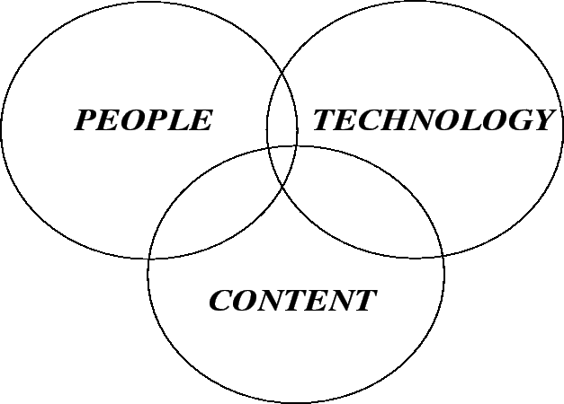
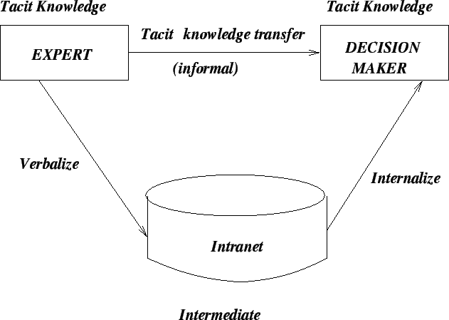
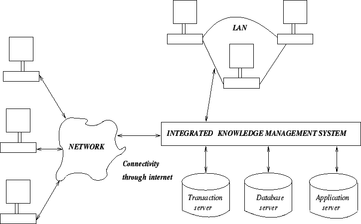

Next: Acquiring the KM System
Up: Knowledge Creation & Knowledge
Previous: Nonaka's Model of Knowledge
Contents
- Knowledge architecture can be regarded as a prerequisite
to knowledge sharing.
- The infrastructure can be viewed as a combination of people,
content, and technology.
- These components are inseparable and interdependent (refer to Figure
3.3).
Figure 3.3:
Knowledge Management, a conceptual view
|

|
The People Core
- By people, here we mean knowledge workers, managers, customers,
and suppliers.
- As the first step in
knowledge architecture, our goal is to evaluate the existing information/
documents which are used by people, the applications needed by them, the
people they usually contact for solutions, the associates they collaborate
with, the official emails they send/receive, and the database(s) they
usually access.
- All the above stated resources help to create an employee profile,
which can later be used as the basis for designing a knowledge management
system.
- The idea behind assessing the people core is to do a proper job in
case of assigning job content to the right person and to make sure that
the flow of information that once was obstructed by departments now
flows to right people at right time.
- In order to expedite knowledge sharing, a knowledge network has to be
designed in such a way as to assign people authority and responsibility
for specific kinds of knowledge content, which means:
- Identifying knowledge centers:
- After determining the knowledge that people need, the next step is
to find
out where the required knowledge resides, and the way to capture
it successfully.
- Here, the term knowledge center means areas in the
organization where knowledge is available for capturing.
- These centers supports to identify expert(s) or expert teams in
each center who can collaborate in the necessary knowledge capture
process.
- Activating knowledge content satellites
- This step breaks down each knowledge center into some more
manageable levels, satellites, or areas.
- Assigning experts for each knowledge center:
- After the final framework has been decided, one manager should
be assigned for each knowledge satellite who will ensure integrity
of information content, access, and update.
- Ownership is a crucial factor in case of knowledge capture,
knowledge transfer, and knowledge implementation.
- In a typical organization, departments usually tend to be
territorial.
- Often, fight can occur over the budget or over the control of
sensitive processes (this includes the kind of knowledge a
department owns).
- These reasons justify the process of assigning department
ownership to knowledge content and knowledge process.
- adjacent/interdependent departments should be cooperative and ready
to share knowledge.
The Technical Core
- The objective of the technical core is to enhance communication as well
as
ensure effective knowledge sharing.
- Technology provides a lot of opportunities for managing tacit knowledge
in
the area of communication.
- Communication networks create links between necessary databases.
- Here the term technical core is meant to refer
to the totality of the required hardware, software, and the specialized
human resources.
- Expected attributes of technology under the technical core: Accuracy,
speed, reliability, security, and integrity.
- Since an organization can be thought of as a knowledge network, the
goal of knowledge economy is to push employees towards greater efficiency/
productivity by making best possible use of the knowledge they posses.
- A knowledge core usually becomes a network of technologies designed
to work on top of the organization's existing network.
User Interface Layer
- Usually a web browser represents the interface between the user and the
KM system.
- It is the top layer in the KM system architecture.
- The way the text, graphics, tables etc are displayed on the screen
tends to simplify the technology for the user.
- The user interface layer should provide a way for the proper flow of
tacit and explicit knowledge.
- The necessary knowledge transfer between people and technology involves
capturing tacit knowledge from experts, storing it in knowledge base, and
making it available to people for solving complex problems.
- Features to be considered in case of user interface design:
- Consistency
- Relevancy
- Visual clarity
- Usability
- Ease of Navigation
Figure 3.4:
The Transfer of Knowledge
|

|
Authorized Access Layer
- This layer maintains security as well as ensures authorized access to
the knowledge captured and stored in the organization's repositories.
- The knowledge is usually captured by using internet, intranet of
extranet.
- An organization's intranet represents the internal network of
communication systems.
- Extranet is a type of intranet with extensions allowing specified
people (customers, suppliers, etc.) to access some
organizational information.
- Issues related to the access layer: access privileges, backups.
- The access layer is mostly focused on security, use of protocols
(like passwords), and software tools like firewalls.
- Firewalls can protect against:
- E-mails that can cause problems.
- Unauthorized access from the outside world.
- Undesirable material (movies, images, music etc).
- Unauthorized sensitive information leaving the organization.
- Firewalls can not protect against:
- Attacks not going through the firewall.
- Viruses on floppy disks.
- Weak security policies.
Collaborative Intelligence and Filtering Layer
- This layer provides customized views based on stored knowledge.
- Authorized users can find information (through a search
mechanism) tailored to their needs.
- Intelligent agents (active objects which can perceive, reason,
and act in a situation to help problem solving) are found to be extremely
useful in some situations.
- In case of client/server computing, there happens to be frequent and
direct interaction between the client and the server.
- In case of mobile agent computing, the interaction happens between the
agent and the server.
- A mobile agent roams around the internet across multiple servers
looking
for the correct information. Some benefits can be found in the areas of:
- Fault tolerance.
- Reduced overall network load.
- Heterogeneous operation.
- Key components of this layer:
- The registration directory that develops tailored information based on
user profile.
- Membership in specific services, such as sales promotion, news service
etc.
- The search facility such as a search engine.
- In terms of the prerequisites for this layer, the following criteria
can be considered:
- Security.
- Portability.
Flexibility
- Scalability
- Ease of use.
- Integration.
Knowledge-Enabling Application Layer (Value-Added Layer)
- This creates a competitive edge.
- Most of the applications help users to do their jobs in
better ways.
- They include knowledge bases, discussion databases, decision support
etc.
Transport Layer
- This is the most technical layer.
- It ensures to make the organization a network of relationships where
electronic transfer of knowledge can be considered as routine.
- This layer associates with LAN (Local Area Network),
WAN (Wide Area Network), intranets,
extranets, and internet.
- In this layer we consider multimedia, URL's, connectivity
speeds/bandwidths, search tools, and consider managing of network
traffic.
Middleware Layer
- This layer makes it possible to connect between old and new data
formats.
- It contains a range of programs to do this job.
Repositories Layer
- It is the bottom layer of the KM architecture which represents the
physical layer in which repositories are installed.
- These may include, legacy applications, intelligent data warehouses,
operational databases etc.
- After establishing the repositories, they are linked to form an
integrated repository.
Figure 3.5:
Integrated Knowledge Management System
|

|
Next: Acquiring the KM System
Up: Knowledge Creation & Knowledge
Previous: Nonaka's Model of Knowledge
Contents
Knowledge Management Systems
2004-11-01